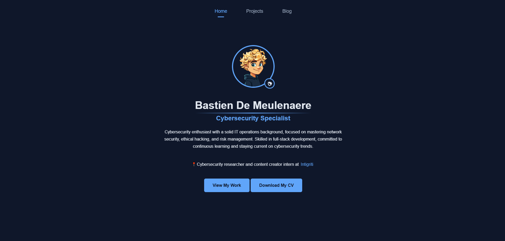

How I Built My Portfolio - A quick look at how and why I made my portfolio. üë∑üöß
Table of Contents
Why?
I built my portfolio to showcase my skills and projects. I wanted to create a platform where I could share my work and experiences with potential employers and clients. The goal was to make it as clean, modern, and user-friendly possible so that anyone could navigate through it easily. I also wanted to make sure that it was responsive and looked good on all devices, from desktops to smartphones.
What?
So since I just wanted a simple, clean-looking portfolio, I decided to use HTML, CSS, and JavaScript. I wanted to keep it simple and not use any frameworks or libraries that would add unnecessary complexity, this also challenged me to bring up my webdev skills üòÅ.
I also used GitHub Pages to host my portfolio, which is a free and easy way to get your website online. I created a repository for my portfolio and pushed my code to it. Then, I enabled GitHub Pages in the settings, and voila! My portfolio was live on the internet. I love how easy this was because anyone with a GitHub account can do this.
Your portfolio is more than just a showcase of work, it's a story of growth, passion, and the challenges you've overcome. Build it not just to impress, but to express who you truly are.
Conclusion
To be honest I never thought that I would make a portfolio. I always thought that it was a lot of work and that there was no point to it. But now that I made it I have to say it's an easy way of keeping record of what my achievements are. Also making it wasn't really hard since it's just a plain page.
With this I hope that whoever reads this enjoys it and maybe even gets inspired to make their own portfolio. If you have any questions or feedback, feel free to reach out to me on my social media.